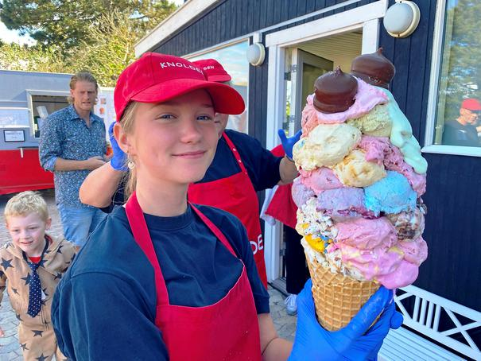
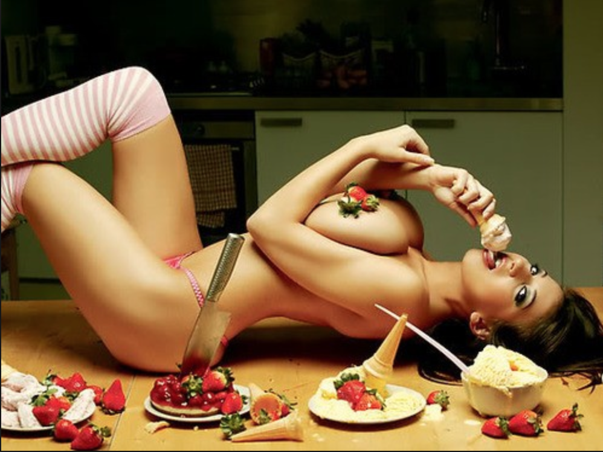
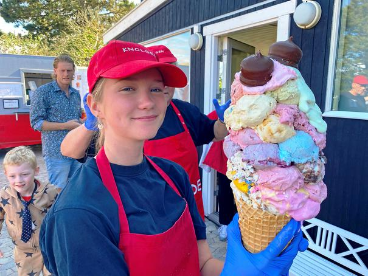
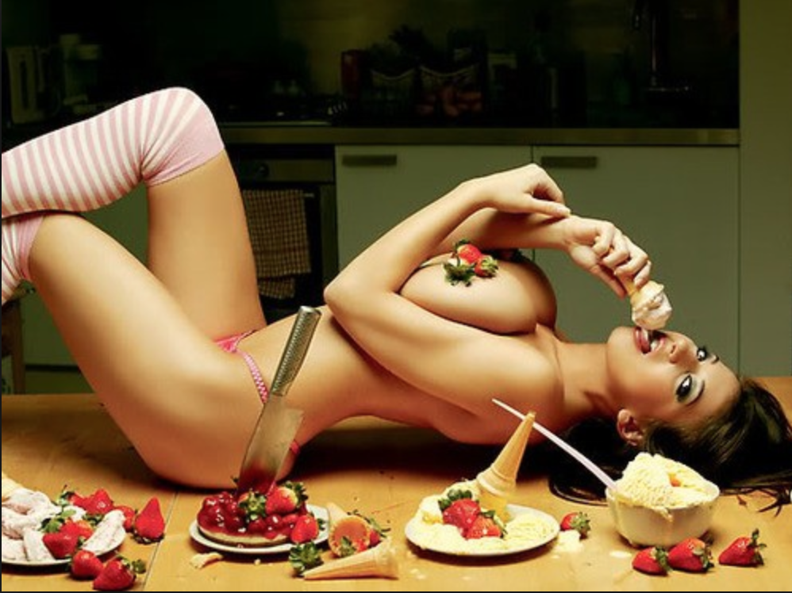

Vaffelis!
ispinde!

Alternativ!

Is på den fede måde - og den eneste forekomst af is, hvor det kan spises gult, er.. ja, is. Som i isvaffel, ispind osv.
Denne type is kan smage sindsygt godt, og bruges til at kurere ting som børnegråd, sukkertrang, og andre alvorlige symptomer!
Det er også den mest alsidige type is, da den kan fremstilles, og spises på rigtig mange måder!
Som eksempler, fremvises her et par billeder:
Vaffelis!
ispinde!
Alternativ!
